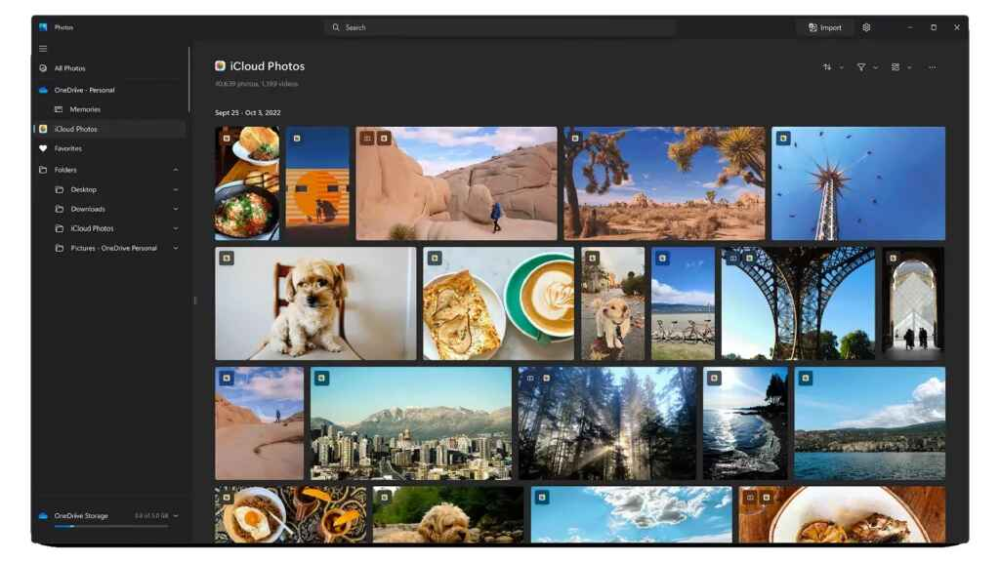

Microsoft, in addition to introducing new Surface devices, has announced an update to the Photos app in Windows 11. It is related to iCloud Photos integration. With this, users will be able to sync their iCloud Photos directly to their Windows 11 devices.
iCloud Photos will now appear in the Photos app in Windows 11 alongside photos from your PC and OneDrive. The Photos app in Windows 11 has been redesigned to include a new “All Photos” gallery view for access to all media. Apart from this, a special section has also been added in the side navigation pane.

Microsoft has started releasing the new update with the new Photos app (version 2022.31100.9001.0) to Windows Insiders on the Dev Channel. If you are an insider, you will get this new update which can easily sync your iCloud Photos to Windows 11. To do this, you must first sign in to the iCloud app for Windows 11. Microsoft expects to roll out this update to general users in the coming months.
Additionally, Apple has collaborated with Microsoft on more integrations. Apple Music and Apple TV apps will be available from the Microsoft Store next year, it has been revealed.
This new partnership with Apple can help users access parts of their Apple ecosystem while using Windows devices. This is similar to how Microsoft has enabled messages, calls and more from Android phones on Windows through the Phone Link app. So, what are your thoughts on this new iCloud Photos integration with Windows 11? Comment below.
Source:
Beebom,
TechCrunch,
Website